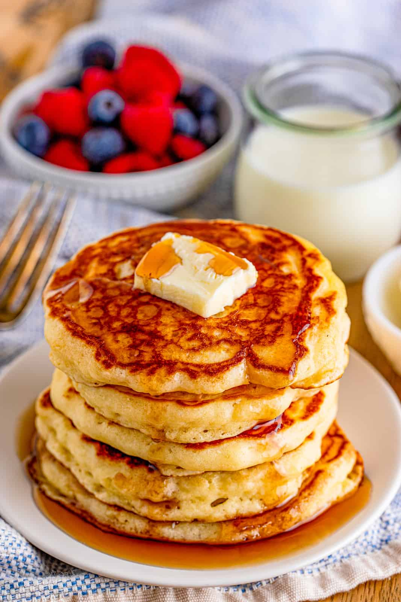

Buttermilk Pancake recipe

The recipe at a glance
This Buttermilk pancake recipe will leave you never buying mixes of pancake batter again! Why pay an upcharge for pancakes when you can just use easily obtained ingredients to make your own! Add some butter on top of these already fantastic pancakes for even more flavor.
We have a non-dairy variant of this pancake recipe as well but for now, we will be sticking to a dairy using recipe. Just keep in mind that when making pancakes, you don't need to use eggs or dairy milk. Baking powder and your choice of non-dairy milk will do perfectly fine too! Want to make your own non-dairy Buttermilk? You can with some almondmilk and vinegar or lemon juice.
Ingredients
- 3 cups all-purpose flour
- 3 tablesppons golden sugar
- 3 teaspoons baking powder
- 1 1/2 teaspoons baking soda
- 3/4 teaspoon salt
- 3 cups buttermilk
- 1/2 cup milk
- 3 eggs
- 1/3 cup butter, melted
Cooking steps
- Combine flour, sugar, baking powder, baking soda, and salt in a large bowl. Beat together buttermilk, milk, eggs and melted butter in a separate bowl. Keep the two mixtures separate until you are ready to cook.
- Heat a lightly oiled griddle or frying pan over mediu-high heat. You can flick water across the surface and if it heats up and sizzles, the pan is ready.
- Pour the wet mixture into the dry mixture; use a wooden spoon or fork to mix until it's just blended together. The batter will be a little lumpy which is what you want.
- Pour or scoop the batter onto the preheated griddle, using approximately 1/2 cup for each pancake. Cook until bubbles appear on the surface, 1 to 2 minutes; flip with a spatula and cook until browned on the other side. Repeat with remaining batter.
- Serve hot and enjoy!